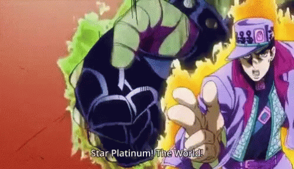
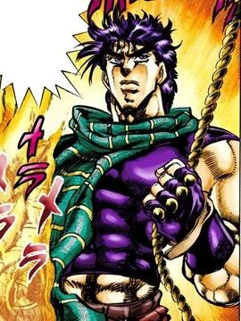
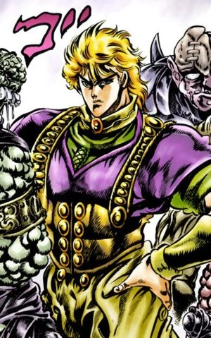

Jotaro
- Nome: Jotaro Kujo
- Idade: 41 no final
- Objetivos: Derrotar DIO para salvar sua mãe
- - Aos 17 espancou um Vampiro Gay
- - Também aos 17 já fumava e apostava almas dos amigos.
- - Gosta de Golfinhos

Za Warudo, em tradução livre "The World", é uma das habilidades mais icônicas da Obra.(Pode ser usado tanto por Jotaro como por Dio)

Joseph
- Nome: Joseph Joestar
- Idade: 91 anos (Parte 6)
- Objetivos: Tornar-se um piloto (Parte 2)
- - É Infiel
- - Velho Bombado
- - Nas horas vagas é uma Drag Queen
- Josph é um dos JoJo's que mais aparece, e que tem mudanças de visuais

Dio
- Nome: Dio Brando
- Idade: 120~121 (Parte 3)
- Objetivos:
Exterminar toda a família Joestar
Subir ao topo
Alcance seu "céu" na Terra (Parte 3 e 6) - - É um Vampiro
- - Grita "Wryyyyyyyyyyyyyyyyyy"/li>
- - Voz Maravilhosa

Za Warudo, em tradução livre "The World", é uma das habilidades mais icônicas da Obra.